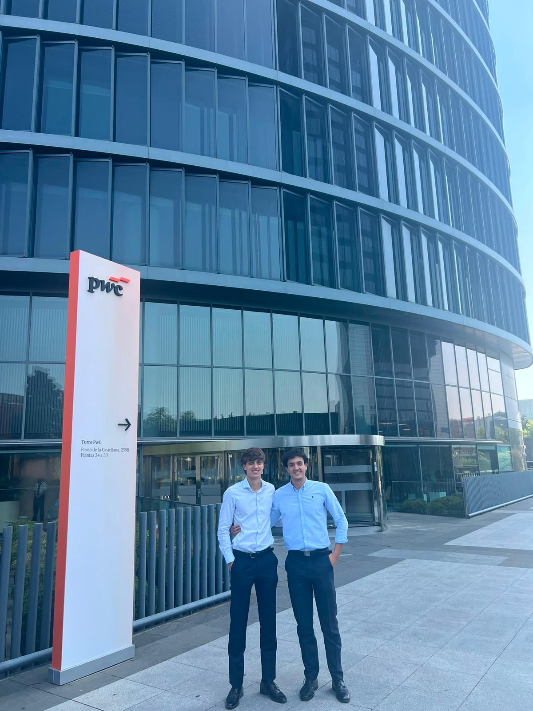

PROFESSIONAL EXPERIENCE · SUMMER 2026
PwC Madrid
Financial Risk & Regulation / GRCAn internship on a project for a major financial institution, focused on validating credit risk models across portfolios—especially PD and EAD.
Context
Validation of credit risk models using financial datasets.
What I worked on
Independently replicated calculations; ran statistical tests on model performance, segmentation and consistency; reviewed R code, corrected errors and improved efficiency; contributed to technical documentation.
Tools / methods
R, SAS and Excel for data extraction, preparation and analysis.
What I took from it
The part I enjoyed most was the combination of quantitative analysis, statistics and programming.
